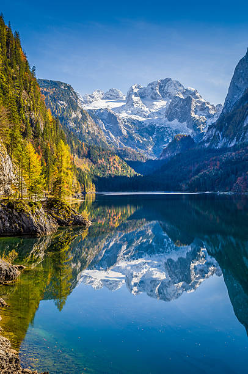
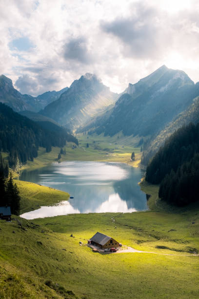

Notre vision
Forte de nos expériences complémentaires, de nos valeurs communes et de notre volonté d’offrir un accompagnement de qualité, nous avons choisi d’unir nos compétences et notre savoir-faire pour créer un lieu unique : Cocon Alpin.
Un espace conçu pour le bien-être, la détente et l’accompagnement global, dans une ambiance chaleureuse et apaisant. Notre objectif est d’offrir à chaque famille un lieu où elle se sent écoutée, soutenue et considérée. Nous accordons une importance particulière à la relation entre le parent et son enfant : Le lien profond. Une connexion authentique, qui renforce leur relation et crée un véritable cocon de confiance.
Bienvenue chez Cocon Alpin, votre instant spa, au cœur de la montagne.
Ici, chaque parent, chaque enfant est accueilli avec bienveillance, respect et authenticité.

À propos de nous – Mélanie & Paula
Nous sommes Mélanie et Paula, cofondatrices de Cocon Alpin,
un institut de bien-être dédié aux familles, aux femmes enceintes,
aux bébés et aux enfants.
Prestation

